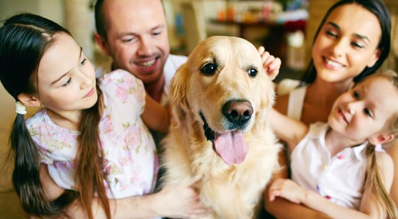

현대 사회는 점점 더 핵가족이 많아지고 혼자 사는 사람도 늘어나고 있다. 그러면서 사람은 함께 생활하는 강아지나 고양이와 같은 동물을 마치 가족처럼 생각하게 되었다.
예전에는 사람과 같이 생활하는 동물을 사람에게 즐거움을 주기 위해 기르는 동물이라는 뜻으로 ‘애완동물’이라고 불렀다. 하지만 요즈음에는 동물이 사람과 함께 더불어 살아가며 심리적으로 안정감과 친밀감을 주는 친구, 가족과 같은 존재라는 뜻에서 ‘반려 동물’이라고 한다. 반려 동물은 전통적인 반려 동물인 개와 고양이뿐만 아니라 앵무새, 고슴도치, 토끼, 햄스터 등으로 종류가 다양해지고 있다.
반려 동물과 함께 생활한 아이는 그렇지 않은 아이에 비해 심리적으로 안정되어 있고, 반려 동물과의 지속적인 관계를 통해 감성이나 사회성, 공감하는 능력이 높게 나타난다고 한다. 또 정신 질환을 앓고 있는 노인도 반려 동물과 함께 생활하면 심리적인 안정감과 자신감이 높아져서 정신 건강에 큰 도움이 된다고 한다.
